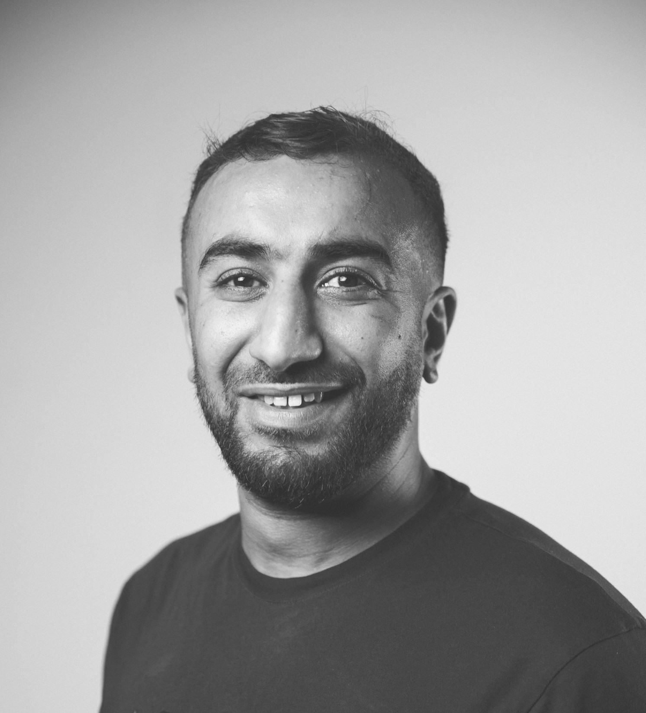

Diagnostic de pannes • Réparation • Électronique / Mécanique • Amélioration terrain
Technicien spécialisé en diagnostic complexe, analyse de causes racines et remise en service de systèmes techniques (électronique & mécanique). Expérience en environnement industriel exigeant : drones industriels, production, ATEX et salle blanche. Autonome, méthodique et orienté performance terrain.

Divonne-les-Bains • Permis B + Permis G
Déploiement de processus de vérification des composants critiques et création d’un banc d’essai pour tester et valider les pièces en configuration réelle.
Impact : réduction du temps moyen de diagnostic • diminution des retours atelier • amélioration du taux de remise en service au premier passage.
Identification de la cause racine sur défaut répétitif, mise en place d’actions correctives (procédure de contrôle, point de vérification supplémentaire, standardisation).
Impact : suppression du défaut répétitif et amélioration de la fiabilité produit.
Amélioration des méthodes de travail, standardisation des opérations et fiabilisation des assemblages pour accroître la performance et la qualité en environnement drone.
Mise en place d’un processus de tri, contrôle et remise en état de composants présentant des défauts mineurs.
Résultat : 70 000 CHF d’économies générées via la mise en place d’un processus structuré de reconditionnement et de validation de pièces.
Analyse de panne • Tests • Mesures • Validation • Recherche cause de panne
Préventive & curative • Remise en service • Fiabilisation • Dépannage
Lecture schémas • Dépannage • Assemblage/désassemblage • Contrôles
Production • Salle blanche • ATEX • Procédures • Non-conformités (base)
Multimètre • Tests fonctionnels • Validation composants • Lecture schémas • Contrôles qualité • Office / Google Workspace • Rigueur documentation
Notions de gestion de projet (formation Microsoft) • Amélioration continue terrain
Microsoft — 2024
Certification Suisse — 2022
Assemblage électronique — 2018
AFPA — 2017
Industrie pharmaceutique — 2015
— 2012
Lycée Louis Armand — Génie électrotechnique — 2007